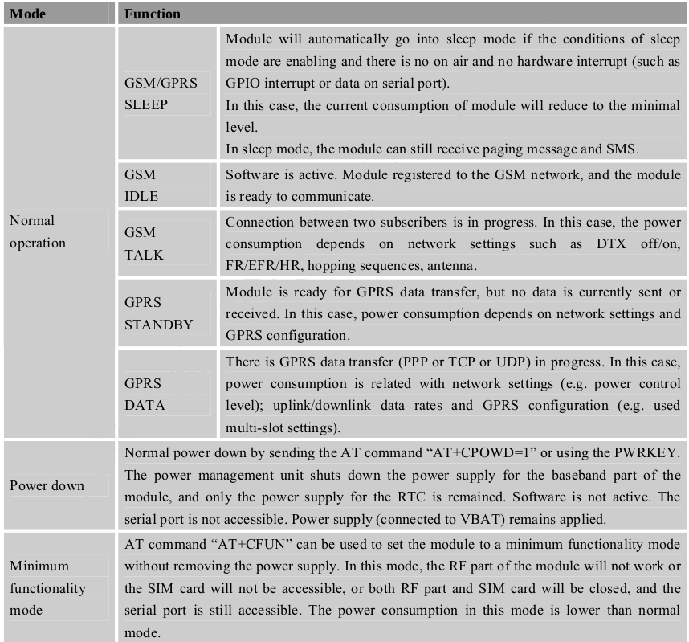

SW startup guide for Vayu 2G
For a quick guide to starting with the Vayu 2G cape's HW, see Leaflet for 2G cape.
Below, we describe how to set up the 2G capes and its associated software.
Software overview for using Vayu-2G-A/Vayu-2GP-A Cape
Data connection is established based on PPP protocols. Wvdial is mainly used to configure the dialup settings. For setting up various settings for PPP connection and establishing a data connection on these capes follow the link to the wiki
-
Way to setup the Vayu 2G Capes
-
How to read location and coarse time as NMEA-0183 message from the serial UART ttyO4 port
-
How to write wvdial conf files for any network
-
Sample wvdial.conf file for AT&T and T-Mobile USA
For using the Vayu-2G-A/Vayu-2GP-A Cape, please ensure that you have the following :
-
PPS drivers enabled in kernel, required if GPS module is present.
-
Vayu Device tree overlay file
You can either download kernel patches containing the same to use with your existing images or you can download our prebuilt MicroSD card image or EMMC flasher image.
All the images and files and extra support on software can be found here : Vayu_Cape_SW_images_and_drivers
Device enable for Vayu-2G-A/Vayu-2GP-A Cape
Setting up the system
-
Place a mini sim in the sim card slot and connect a GSM antenna to the SMA connector.
-
Mount the cape on BBB carefully.
-
Ensuring that the power jumper on the cape is in its place, power up the setup using a 5V DC adapter(min 2.5A) to barrel jack. D2 LED on the cape will glow alongwith LEDs on the Beaglebone black.
Note: Before proceeding further ensure D2 LED is glowing properly. Make sure that the adapter being used is of proper rating and has been connected properly. Further check for the presence of the power jumper(#12 on leaflet).
Note: Do not try to power up using USB cable alone. Always power up system with a DC adapter. Also while disconnecting power, USB cable should be removed before the DC adapter.
GSM/GPRS Modem
Note: All commands are executed as root on Debian unless otherwise mentioned.
GSM/GPRS Modem is connected to Beaglebone Black at UART1 port. To access the Modem from Beaglebone Black, we need to first enable the UART1 (ttyO1) port in kernel. For this do following :
Step 1. Boot into Beaglebone Black , running Debian Wheezy on it. Login as root user
Step 2. Go to /lib/firmware
cd /lib/firmware
Step 3. After ensuring that file BB-UART1-00A0.dtbo exists, apply the device tree overlay as :
echo BB-UART1 > /sys/devices/bone_capemgr.9/slots
Step 4. On reading ‘’’slots’’’ if you are able to see UART1 , then it has been applied successfully.
cat /sys/devices/bone_capemgr.9/slots
Step 5. You can verify that UART1 (ttyO1 ) by checking for ttyO1 in devices (/dev/)
ls /dev/ttyO*
Output will show /dev/ttyO0 and /dev/ttyO1 .
Over UART1 port we can communicate with the modem and also AT commands can be executed whenever required. The UART port of modem is available at one instant only, either it is establishing ppp connection or AT commands are executed on it. We now see and understand different modes for controlling the GPS/GPRS Modem and ensure that it is properly powered on and available for establishing data connection.
The Modem has different operating modes:

To use the modem after powering up the Cape, it needs to be properly turned on.
For the Modem , there is a ON/OFF pin and a Reset pin which are used to turn the modem on/off or soft reset and hard reset it. Now, on the Vayu Cape, there are two Leds which indicate status of 2G module :
i. STATUS LED D3 : This Led gives the state of the Modem. It is on when the module is turned on and off when it is turned off.
ii. NETLIGHT LED D4 : It has different states depending on the mode of operation of the Modem :-
a. Off when Modem is off
b. 64ms ON/800ms OFF when Modem is on but it is not registered on a network i.e. sim card has not been detected or is not present
c. 64ms ON/3000ms OFF when Modem is on and is registered to a network i.e. sim card has been detected but a network connection has not been established.
d. 64ms ON/300ms OFF when Modem is on and GPRS communication has been established.
On the Cape, ON/OFF pin and Reset pin can be controlled via a push button switch as well as GPIOs assigned to them on Beaglebone Black. For ON/OFF pin, S1 is the ON/OFF push button switch provided on cape and GPIO45 in Beaglebone Black is assigned the same. GPIO45 should always be set high. For Reset pin, S2 is the Hard Reset push button switch provided on cape and GPIO60 in Beaglebone Black is assigned the same. GPIO60 should always be set high.
To Power on Modem :
User can Power on or off the modem by hardware push button or by software method (prefered)
-
By pressing the switch S1 for atleast 1s and then releasing it after Beaglebone Black is booted properly
-
By setting GPIO45 ‘Active Low’ for atleast 1s and then setting it ‘Active high’.
Also, when Cape and Beaglebone black, both are powered up and booted, GPIO45 is initially set low internally.
Step 6: Set GPIO45 High, after Beaglebone Black has booted completely with Vayu Cape mounted on it to turn on the modem properly.
Step 7: Once ttyO1 port was enabled, you can execute AT commands for the modem on it or see the messages from the modem that are sent there. You can use minicom for it.
apt-get install minicom
minicom –s
and set serial port settings as /dev/ttyO1 115200 8N1 When you , properly turn on the modem after you have booted i.e. set GPIO45 high, or whenever modem is turned ON , you will see an output on /dev/ttyO1 port. RDY Power On of Modem is indicated by the STATUS GPIO or LED which should be ON . Also the NETLIGHT LED will start blinking depending on whether SIM Card is present or not.
To power off Modem :
Modem can be powered off by :
1) Normal power down procedure :
- Power down by ON/OFF Pin :
i. Press the switch S1 for atleast 1s and then release it
ii. Set GPIO45 low for atleast 1s and set it high
- Power down by AT command : AT+CPOWD=1 , at /dev/ttyO1
2) Abnormal Power down procedure :
-
Over-voltage or under-voltage automatic power down
-
over-temperature or under-temperature automatic power down
In Normal Power down, the modem port /dev/ttyO1 will read out the following message :
NORMAL POWER DOWN
In Abnormal Power down Procedure , AT commands cannot be issued anymore, only RTC is active.
Following URC will be reported :
If voltage <= 3.3V, UNDER-VOLTAGE WARNING
If voltage >= 4.7V, OVER-VOLTAGE WARNING
If voltage < 3.2V, UNDER-VOLTAGE POWERDOWN
If voltage > 4.8V, OVER-VOLTAGE POWERDOWN
If temperature > 80degree Celsius , +CMTE:1
If temperature < -30degree Celsius , +CMTE:-1
If temperature > +85degree Celsius, +CMTE:2
If temperature < -40degree Celsius, _CMTE:-2
Power down of Modem is indicated by STATUS LED not glowing or GPIO going low. Also, NETLIGHT LED will be Off.
Soft Reset the Modem :
-
Power Down the Module
-
Wait for atleast 800ms after STATUS LED switched off or GPIO went low
-
Power On the Module
Hard Reset the Modem:
This is an emergency reset only.Use this only when ON/OFF pin or “AT+CPOWD=1” have no effect.
-
The Hard reset pin can be pulled low for atleast 1.2s and then set high.
-
GPIO60 should be high all the time. S2 is Hard reset push button switch for Modem.
Note : The GPRS modem on the cape has been shipped pre-set with settings so that its serial port is working and appropriate settings has been stored in the modem. For more details about its operation modes refer to datasheet.
If SIM900A has been set to minimum functionality by “AT+CFUN=0”, the RF function and SIM card function will be closed. In this case, the serial port is still accessible, but all AT commands correlative with RF function or SIM card function will not be accessible. For SIM900A, it requests to set AT command “AT+CSCLK=1” to enable the sleep mode; the default value is 0, that can’t make the module enter sleep mode
To change the modes or any settings related to modem , you need access to AT ports and run AT commands there.
Considering that, Cape is connected properly to Beaglebone black and user is logged in as root and has checked for UART1 port, we check that the Modem is turned on properly before trying to establish a connection, so:
i. D3 is continuously glowing and D4 is blinking as 64ms ON/800ms OFF, when SIM card is not present or not detected/inserted properly.
ii. D3 is continuously glowing and D4 is blinking as 64ms ON/3000 ms OFF when a valid SIM card is present. If SIM card was inserted while the modem was on, please software reset the modem by turning it OFF and then ON again using Software GPIO commands or Push button switch. [refer to]
If any other state of LEDs is present, please soft reset the modem using push button switch or GPIOs.
So when it is established that modem is in ii state , now we try to establish connection
Summarizing, following are the steps to enable PPP connection using the Modem :
Step 1 : Ensure that a GSM/GPRS enabled SIM card is placed in the simcard slot, before Beaglebone black is booted up with the cape.
Step 2 :Enable UART1(/dev/ttyO1 ) in the kernel by applying its device tree overlay from /lib/firmware directory.
Step 3: Check for the status of the LEDs, D3(STATUS) and D4(NETLIGHT). D3 should be high and D4 should be blinking. If no sim card is present, and D4 blinks accordingly, then insert the sim card in the slot and Soft Reset the Modem.
Step 4 : Now we have to ensure that the modem is properly switched on. The GPIO45 is pulled low in Beaglebone black when it has booted , but ON/OFF Pin in modem also has internal pullup so basically it is turned on when the Board boots up. But to be safe, we have to set the GPIO45 high.
When you turn GPIO45 high, check once again that setting the ON/OFF pin high, completed the Power ON cycle for the modem and not the Power OFF cycle, by checking the STATUS LED which should still be ON.
Step 5: Once it has been ensured modem is properly switched on, we can proceed with establishing PPP connection either using PPPd or Wvdial. For more details on using them, please refer to Application notes for 2G/2GP cape.
All the images and files and extra support on software can be found here : click here
Wvdial Configuration for Debian Wheezy
Note : All commands are recommended to be executed as root user.
Download and install Wvdial
$ apt-get install wvdial
Executing the following command usually sets the wvdial.conf file which is used for dialing to GPRS communication, but since here our modem port is on a UART(/dev/ttyO1) and not on /dev/ttyS or /dev/ttyUSB ports, we will have to manually configure it.
$ wvdialconf
So, open the wvdial.conf file
$ nano /etc/wvdial.conf
Considering that, you have the USERNAME, PASSWORD and APN available for the service provider of the sim card being used, edit and make wvdial.conf file like this.
[Dialer Defaults]
Modem Type = Analog
ModemPhone = *99#
ISDN = 0
Baud = 115200
Username = USERNAME
Password = PASSWORD
Modem = /dev/ttyO1
Init1 = ATZ
Init2 = at+cgdcont=1,"ip","APN"
Stupid Mode = 1
Usually for GSM Networks, Modemphone is 99# or 99***1# After editing save and exit, now run wvdial for establishing communication.
$ wvdial
You can also edit the wvdial.conf file for multiple service providers by providing its name here [Dialer Defaults] :
[Dialer Vodafone]
Modem Type = Analog Modem
Phone = *99#
ISDN = 0
Baud = 115200
Username = 0
Password = 0
Modem = /dev/ttyO1
Init1 = ATZ
Init2 = at+cgdcont=1,"ip","www"
Stupid Mode = 1
[Dialer Airtel]
Modem Type = Analog Modem
Phone = *99#
ISDN = 0
Baud = 115200
Username = airtel
Password = airtel
Modem = /dev/ttyO1
Init1 = ATZ
Init2 = at+cgdcont=1,"ip","airtelgprs.com"
Stupid Mode = 1
And run wvdial for the required service provider as follows:
wvdial airtel
A list of running commands should be visible on the shell, trying to establish PPP connection. Once PPP connection has been established, you will see a ppp0 IP. To check the status of wvdial and find out its IP open a new shell and use either of following:
Run ifconfig and find ppp0 in the list of network connections.
$ ifconfig
or
$ ifconfig ppp0
Check the network statistics for IP and their gateways and check the Iface column for ppp0
$ netstat -arn
* Kernel IP routing table
Destination Gateway Genmask Flags MSS Window irtt Iface
0.0.0.0 192.168.1.1 0.0.0.0 UG 0 0 0 eth0
192.168.1.0 0.0.0.0 255.255.255.0 U 0 0 0 eth0
192.168.7.0 0.0.0.0 255.255.255.252 U 0 0 0 usb0
192.200.1.21 0.0.0.0 255.255.255.255 UH 0 0 0 ppp0
- Read the system messages as
$ cat /var/log/messages
It lists all the attempts at establishing ppp communication using the modem and ips for the successful attempt. Now all that is left, is to route the network traffic over the gateway of ppp0 instead of eth0 so that GPRS communication is fully completed.
PPP connection has been established over GPRS using 2G module and wvdial.
After PPP has been established, the following is the status of the LEDs and GPIOs
-
STATUS LED D3 – It is continuously glowing, once the Modem was turned on.
-
SIGNAL LED D4 – It is now blinking at 64ms ON/300ms OFF . Earlier when PPP was not established but SIMcard was detected by modem, then it was blinking at 64ms ON/3000ms OFF.
-
STATUS GPIO23 – Its value is be 1, once modem was turned on.
-
ON/OFF GPIO45 – Its value should be 1.
-
RESET GPIO60 – Its value should always be 1.
You can alternately run wvdial for multiple service providers and store their wvdial.conf files too by this way also
$ wvdial -C /etc/wvdial.conf.provider_name
where wvdial.conf.provider_name is wvdial.conf for the SIM card currently inserted. Also, you can Wvdial in background to free up the shell instead of opening another new shell by :
$ wvdial & disown
FAQ
Ques) How do I check that whether the PPP connection has been established or not?
Ans)
1) Use the command “ifconfig ppp0” to check the network information. If a connection is established, an IP should be visible.
2) Details about the connection can be found in “/var/log/messages”. Issue following command :
“tail –f /var/log/messages”
Ques) How do I configure the ppp connection for my sim card operator?
Ans) You would mainly require the Username, Password and APN of the service provider to establish a PPP connection. Ensure “wvdial” package is installed.
“dpkg –l | grep wvdial”
If wvdial is present, issue “wvdialconf” command. Then update the service provider information in the "/etc/wvdial.conf" file and you are good to go.